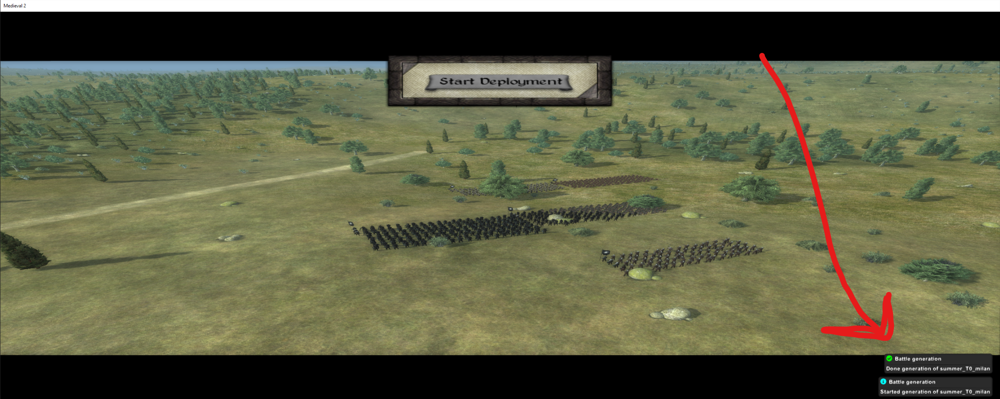
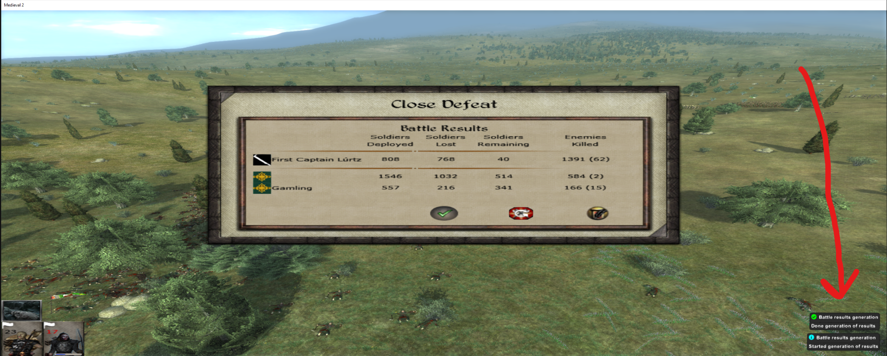

How to play hotseat battles online¶
Video guide¶
Download and install EOP
Download EOP from the #m2tweop-testing channel in the M2TWEOP discord
Copy the contents of the zip file to
Medieval II Total War\mods\<YOUR_MOD_NAME>
Launch M2TWEOP GUI.exe
Click ‘General’ tab > Tick ‘Use M2TWEOP‘ and setup config file (e.g TATW.cfg or use standard medieval2preferences.cfg)
Click ‘Hotseat’ tab > Tick both Autogeneratation options

Save and click ‘Run Mod’
The mod should start and you should see ‘Initializing EOP - Done’ notification in the bottom right.
Load up your campaign.
When a battle occurs, we will see the following message appear
If you haven’t generated and played the battle yet, proceed to How to Generate The Battle Setup
If you have played the battle and wish to transfer the results to the campaign map, proceed to How to Transfer The Battle Results

How to Generate The Battle Setup¶
Close the window that appears, save the game and click ‘Play Battle’
Wait for the battle to load
Once we see this message, the battle setup has been generated.

Exit the battle and navigate to
Medieval II Total War\mods\<YOUR_MOD_NAME>\eopBattles\lastBattle
Here we will have a folder that matches the name that was displayed in the battle deployment screen. In our case, the folder is called ‘summer_T0_milan’ (It is summer, we are at Turn 0 and playing as ‘Milan’)
Copy that folder and paste it into to
Medieval II Total War\mods\<YOUR_MOD_NAME>\data\world\maps\battle\custom
Now we can host a Multiplayer Lobby/play a Historical Battle and use our generated battle as our ‘Scenario’
NOTE: If you will play this battle online, make sure all other players also follow this step. Send them the battle setup folder (e.g ‘summer_T0_milan’) and make sure they place it in the same place.

NOTE: NOT ALL UNITS ARE SHOWN ON THIS SCREEN, HOWEVER THEY WILL BE THERE ON THE BATTLE MAP

Play the battle

The battle is complete and the results of the battle have been generated and written to
Medieval II Total War\mods\<YOUR_MOD_NAME>\eopBattles\lastBattleResult\m2tweopBattleResults.json
How to Transfer The Battle Results¶
Now that you have generated the battle setup, played the battle online or in a Historical Battle, we can transfer the results back to the campaign map.
Load your save game before the battle occured
In this example, Rohan was attacker and Rohan won the battle so we select the winner as ‘Attacker’

Click ‘Select results file’ and navigate to
Medieval II Total War\mods\<YOUR_MOD_NAME>\eopBattles\lastBattleResult
Select
m2tweopBattleResults.json
Select ‘Transfer results now’
NOTE: BATTLE RESULTS DISPLAYED ON THIS SCREEN WILL NOT BE ACCURATE BUT RESULTS TRANSFERRED TO CAMPAIGN MAP WILL BE
Success message will apear and results will be transfered to campaign map

Repeat process for each battle you wish to play online.
FAQ¶
If the mod does not start, please double check your settings (like the config file) or come and chat in the M2TWEOP discord
‘Versions are incomptaible’ error when hosting a multiplayer game. Medieval 2 Online requries all players to have the EXACT same files and file structure when playing an online game. Please ensure your friend has the correct files and your versions match.